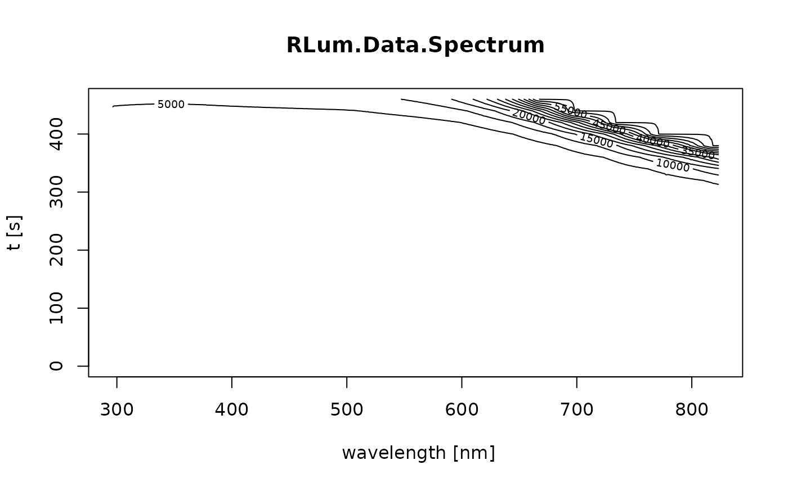

Merge function for RLum.Data.Spectrum S4 class objects
Source:R/merge_RLum.Data.Spectrum.R
merge_RLum.Data.Spectrum.RdThis function allows to merge RLum.Data.Spectrum objects in different ways without modifying the original objects.
Arguments
- object
list of RLum.Data.Spectrum (required): list of objects to be merged.
- merge.method
character (required): method for combining of the objects, e.g.
'mean'(default),'median','sum', see details for further information and allowed methods. Note: Elements in slot info will be taken from the first object in the list.- method.info
numeric (optional): allows to specify how info elements of the input objects are combined, e.g.
1means that just the elements from the first object are kept,2keeps only the info elements from the 2 object etc. If nothing is provided all elements are combined.- max.temp.diff
numeric (with default): maximum difference in the time/temperature values between the spectra to be merged: when differences exceed this threshold value, the merging occurs but a warning is raised.
Value
Returns an RLum.Data.Spectrum object.
Details
Supported merge operations are:
"mean" (default)
The mean over the cell values is calculated using the function rowMeans.
"median"
The median over the cell values is calculated using the function matrixStats::rowMedians.
"sum"
All cell values will be summed up using the function rowSums.
"sd"
The standard deviation over the cell values is calculated using the function matrixStats::rowSds.
"var"
The variance over the cell values is calculated using the function matrixStats::rowVars.
"min"
The min values from the cell values is chosen using the function matrixStats::rowMins.
"max"
The max values from the cell values is chosen using the function matrixStats::rowMins.
"append" (only for RLum.Data.Curve)
Appends cell values of all curves to one combined data curve. The channel width is automatically re-calculated, but requires a constant channel width of the original data.
"-"
The cell sums of the last objects are subtracted from the first object.
"*"
The cell sums of the last objects are multiplied with the first object.
"/"
Values of the first object are divided by cell sums of the last objects.
Note
The information from the slot recordType is taken from the first
object in the input list. The slot
'curveType' is filled with the name merged.
Author
Marco Colombo, Institute of Geography, Heidelberg University (Germany) Sebastian Kreutzer, Institute of Geography, Heidelberg University (Germany) , RLum Developer Team
How to cite
Colombo, M., Kreutzer, S., 2025. merge_RLum.Data.Spectrum(): Merge function for RLum.Data.Spectrum S4 class objects. Function version 0.1.1. In: Kreutzer, S., Burow, C., Dietze, M., Fuchs, M.C., Schmidt, C., Fischer, M., Friedrich, J., Mercier, N., Philippe, A., Riedesel, S., Autzen, M., Mittelstrass, D., Gray, H.J., Galharret, J., Colombo, M., Steinbuch, L., Boer, A.d., 2025. Luminescence: Comprehensive Luminescence Dating Data Analysis. R package version 1.1.0. https://r-lum.github.io/Luminescence/
Examples
## load example data
data(ExampleData.XSYG, envir = environment())
## plot single curve
plot_RLum(TL.Spectrum)

## sum two copies of the same curve
merged <- merge_RLum.Data.Spectrum(list(TL.Spectrum, TL.Spectrum),
merge.method = "sum")
plot_RLum(merged)